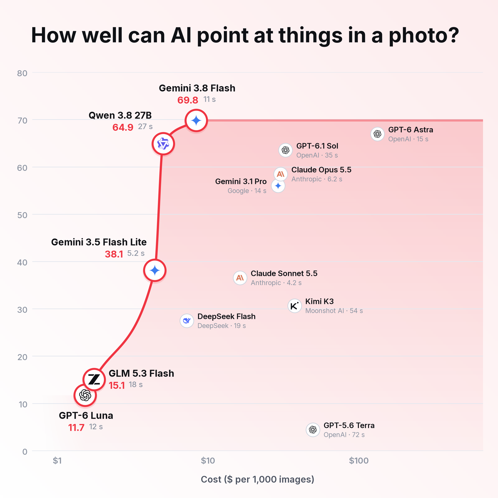

Point-finding benchmark v2 · four tasks (logs, cows, fig leaves, dirty/clean dishes) · human-approved reference points · language models: prompt v2, 3 tries, medium thinking · specialists: whole GPU 0, cost under load · score = tolerance-average F1 out of 100 · seconds = median per question, one photo at a time.
How specialists are priced: $0.22 per GPU-hour (rented RTX 3090) × time per photo, discounted by how much more the GPU does with several copies running at once. Florence-2 appears in both of its text modes: nothing documents which one means “find every object”.

13 language models, each tested on all four tasks.
Source and limits
Drawn by scripts/draw_charts.py --style editorial from results/point-benchmark-v2; regenerate with python3 scripts/plot_point_pilot.py point-benchmark-v2 point-benchmark-v2. Full method: docs/point-benchmark-v2.md.
Scores measure closeness to approved reference points, not whether a point lies inside the object (masks come later). One thinking level (medium). Language-model seconds include the internet and the provider’s queue; specialist seconds do not. Six photos cannot support broad claims.